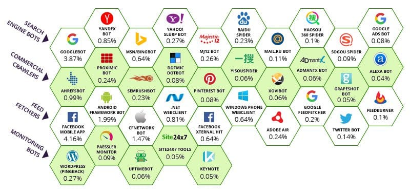
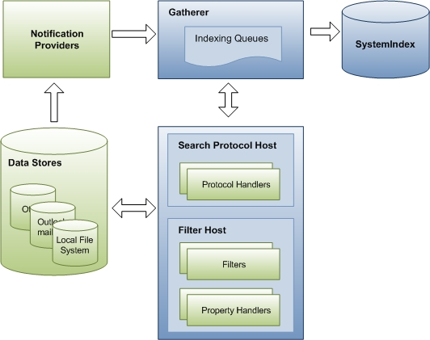
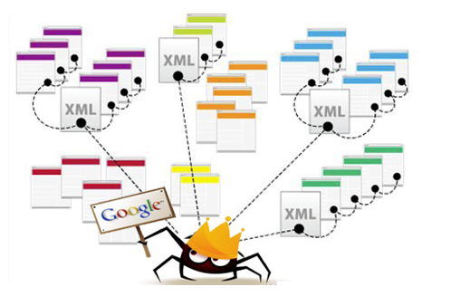
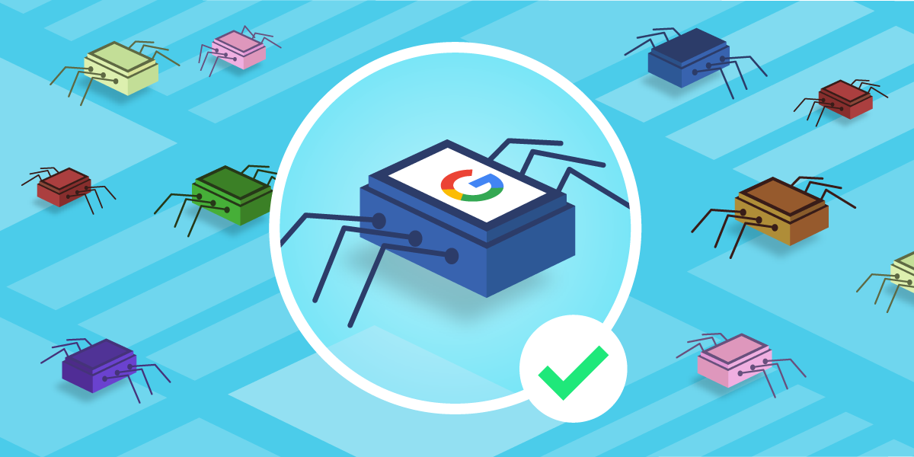
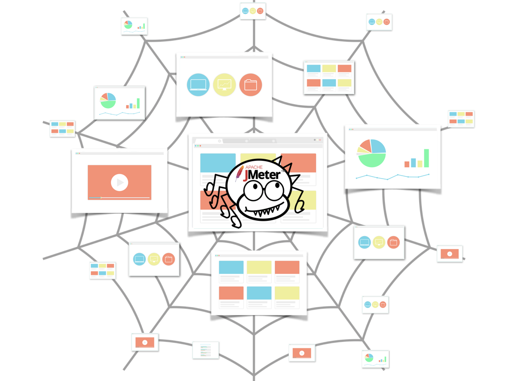

The bots from the major search engines are called:
Google: Googlebot (actually two crawlers, Googlebot Desktop and Googlebot Mobile, for desktop and mobile searches)
Bing: Bingbot
Yandex (Russian search engine): Yandex Bot
Baidu (Chinese search engine): Baidu Spider
What Is Web Crawler Bot?
A web crawler, spider, or search engine bot downloads and indexes content from all over the Internet. The goal of such a bot is to learn what (almost) every webpage on the web is about, so that the information can be retrieved when it's needed. They're called "web crawlers" because crawling is the technical term for automatically accessing a website and obtaining data via a software program.
These bots are almost always operated by search engines. By applying a search algorithm to the data collected by web crawlers, search engines can provide relevant links in response to user search queries, generating the list of webpages that show up after a user types a search into Google or Bing (or another search engine).
A web crawler bot is like someone who goes through all the books in a disorganized library and puts together a card catalog so that anyone who visits the library can quickly and easily find the information they need. To help categorize and sort the library's books by topic, the organizer will read the title, summary, and some of the internal text of each book to figure out what it's about.
However, unlike a library, the Internet is not composed of physical piles of books, and that makes it hard to tell if all the necessary information has been indexed properly, or if vast quantities of it are being overlooked. To try to find all the relevant information the Internet has to offer, a web crawler bot will start with a certain set of known webpages and then follow hyperlinks from those pages to other pages, follow hyperlinks from those other pages to additional pages, and so on.
It is unknown how much of the publicly available Internet is actually crawled by search engine bots. Some sources estimate that only 40-70% of the Internet is indexed for search - and that's billions of webpages.

What is search indexing?
Search indexing is like creating a library card catalog for the Internet so that a search engine knows where on the Internet to retrieve information when a person searches for it. It can also be compared to the index in the back of a book, which lists all the places in the book where a certain topic or phrase is mentioned.
Indexing focuses mostly on the text that appears on the page, and on the metadata* about the page that users don't see. When most search engines index a page, they add all the words on the page to the index - except for words like "a," "an," and "the" in Google's case. When users search for those words, the search engine goes through its index of all the pages where those words appear and selects the most relevant ones.
*In the context of search indexing, metadata is data that tells search engines what a webpage is about. Often the meta title and meta description are what will appear on search engine results pages, as opposed to content from the webpage that's visible to users.

How do web crawlers work?
The Internet is constantly changing and expanding. Because it is not possible to know how many total webpages there are on the Internet, web crawler bots start from a seed, or a list of known URLs. They crawl the webpages at those URLs first. As they crawl those webpages, they will find hyperlinks to other URLs, and they add those to the list of pages to crawl next.
Given the vast number of webpages on the Internet that could be indexed for search, this process could go on almost indefinitely. However, a web crawler will follow certain policies that make it more selective about which pages to crawl, in what order to crawl them, and how often they should crawl them again to check for content updates.
The relative importance of each webpage: Most web crawlers don't crawl the entire publicly available Internet and aren't intended to; instead they decide which pages to crawl first based on the number of other pages that link to that page, the amount of visitors that page gets, and other factors that signify the page's likelihood of containing important information.
The idea is that a webpage that is cited by a lot of other webpages and gets a lot of visitors is likely to contain high-quality, authoritative information, so it's especially important that a search engine has it indexed - just as a library might make sure to keep plenty of copies of a book that gets checked out by lots of people.
Revisiting webpages: Content on the Web is continually being updated, removed, or moved to new locations. Web crawlers will periodically need to revisit pages to make sure the latest version of the content is indexed.
Robots.txt requirements: Web crawlers also decide which pages to crawl based on the robots.txt protocol (also known as the robots exclusion protocol). Before crawling a webpage, they will check the robots.txt file hosted by that page's web server. A robots.txt file is a text file that specifies the rules for any bots accessing the hosted website or application. These rules define which pages the bots can crawl, and which links they can follow.
All these factors are weighted differently within the proprietary algorithms that each search engine builds into their spider bots. Web crawlers from different search engines will behave slightly differently, although the end goal is the same: to download and index content from webpages.

Why are web crawlers called 'spiders'?
The Internet, or at least the part that most users access, is also known as the World Wide Web - in fact that's where the "www" part of most website URLs comes from. It was only natural to call search engine bots "spiders," because they crawl all over the Web, just as real spiders crawl on spiderwebs.

Should web crawler bots always be allowed to access web properties?
That's up to the web property, and it depends on a number of factors. Web crawlers require server resources in order to index content - they make requests that the server needs to respond to, just like a user visiting a website or other bots accessing a website. Depending on the amount of content on each page or the number of pages on the site, it could be in the website operator's best interests not to allow search indexing too often, since too much indexing could overtax the server, drive up bandwidth costs, or both.
Also, developers or companies may not want some webpages to be discoverable unless a user already has been given a link to the page (without putting the page behind a paywall or a login). One example of such a case for enterprises is when they create a dedicated landing page for a marketing campaign, but they don't want anyone not targeted by the campaign to access the page. In this way they can tailor the messaging or precisely measure the page's performance. In such cases the enterprise can add a "no index" tag to the landing page, and it won't show up in search engine results. They can also add a "disallow" tag in the page or in the robots.txt file, and search engine spiders won't crawl it at all.
Website owners may not want web crawler bots to crawl part or all of their sites for a variety of other reasons as well. For instance, a website that offers users the ability to search within the site may want to block the search results pages, as these are not useful for most users. Other auto-generated pages that are only helpful for one user or a few specific users should also be blocked.

Should web crawler bots always be allowed to access web properties?
Web scraping, data scraping, or content scraping is when a bot downloads the content on a website without permission, often with the intention of using that content for a malicious purpose.
Web scraping is usually much more targeted than web crawling. Web scrapers may be after specific pages or specific websites only, while web crawlers will keep following links and crawling pages continuously.
Also, web scraper bots may disregard the strain they put on web servers, while web crawlers, especially those from major search engines, will obey the robots.txt file and limit their requests so as not to overtax the web server.

How do web crawlers affect SEO?
SEO stands for search engine optimization, and it is the discipline of readying content for search indexing so that a website shows up higher in search engine results.
If spider bots don't crawl a website, then it can't be indexed, and it won't show up in search results. For this reason, if a website owner wants to get organic traffic from search results, it is very important that they don't block web crawler bots.

Why is it important for bot management to take web crawling into account?
Bad bots can cause a lot of damage, from poor user experiences to server crashes to data theft. However, in blocking bad bots, it's important to still allow good bots, such as web crawlers, to access web properties